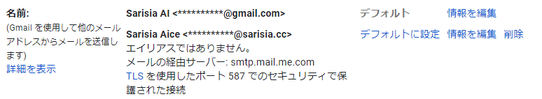
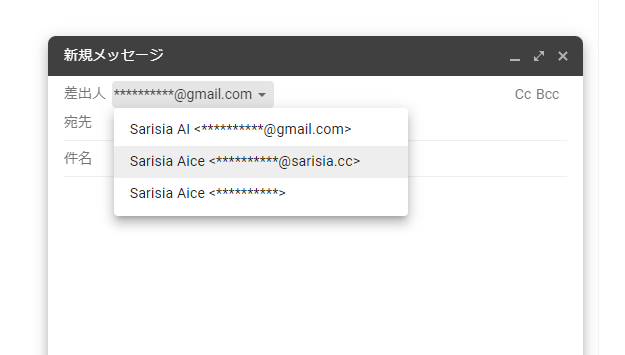
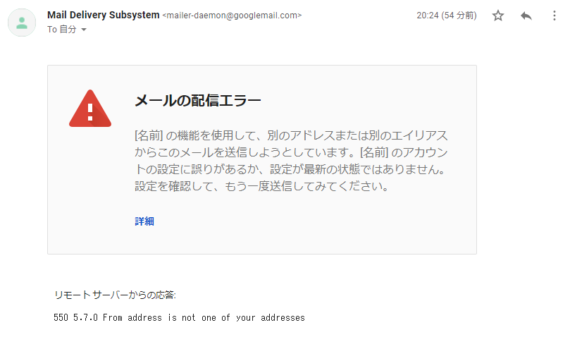

こんにちは.
最近, Apple One 契約者の iCloud+ 自動アップグレードが始まり1, 誰でも iCloud メールのカスタムメールドメイン2が使えるようになったみたいです. カスタムドメインの敷居が下がっていいですね.
さて, 「メールにカスタムドメインは使いたいけど, iCloud メールは嫌だ…」 という方, いらっしゃるのでは無いでしょうか. 私もその一人です. iCloud メールのブラウザ版, お世辞にも使いやすいとは言えませんし (個人の感想です), やはり慣れ親しんだ Gmail を 離れたくありません.
というわけで, なんとか Gmail から iCloud メールで設定したカスタムメールドメインの メールを送受信できないか？と思いポチポチいじっていました.
TL;DR
タイトルにもある通り失敗です.
- iCloud カスタムメールドメインの受信はできる
- iCloud カスタムメールドメインのメールアドレスからの送信は Gmail 側にブロックされて できない
前提
iCloud メールのカスタムメールドメイン設定が完了し, カスタムドメインのメールアドレスを 登録済みの状態を前提とします2.
受信
受信の設定は簡単です. Gmail 側から POP や IMAP で iCloud メールを取ってきたくなりますが, iCloud は POP に対応していないし, Gmail は IMAP に対応していません.
諦めて素直に iCloud 側からメールの自動転送を設定しましょう:
iCloud.comの「メール」で自動的にメールを転送する - Apple サポート https://support.apple.com/ja-jp/guide/icloud/mm6b1a3960/icloud
送信
うまくいかなかった部分です.
iCloud が SMTP サーバの設定情報を公開しているので, これを Gmail に設定してあげれば良さそうです.
以下の手順を参考に, Gmail を設定します:
別のアドレスやエイリアスからメールを送信する - Gmail ヘルプ https://support.google.com/mail/answer/22370?hl=ja
iCloud のメールサーバ情報はこの辺にあります:
iCloud メールクライアント向けのメールサーバ設定 - Apple サポート (日本) https://support.apple.com/ja-jp/HT202304
この時, iCloud SMTP サーバのユーザ名には, オリジナルの iCloud メールアドレスを指定する必要が あります. iCloud に設定済みのカスタムドメインのメールアドレスは弾かれます. 正しく情報を入力すれば, カスタムドメインのメールアドレス宛に確認メールが届き, 上手く行ったように 見えます:

でも送信できない
試しに Gmail から適当なメールを送信してみます.
Gmail の新規メッセージウィンドウから, 差出人を選択できるようになっているので, カスタムドメインの メールアドレスを選択し, 適当に送信します:

すると, Gmail から怒られます:

なんで？
推測になりますが, 恐らく SMTP サーバの設定時にユーザ名として入力したメールアドレスを用いて, From アドレスがバリデーションされています.
iCloud の SMTP サーバはユーザ名としてオリジナルの iCloud メールアドレスしか受け付けてくれないので, From アドレスとしてもオリジナルの iCloud メールアドレスしか利用できません.
まとめ
悲しい